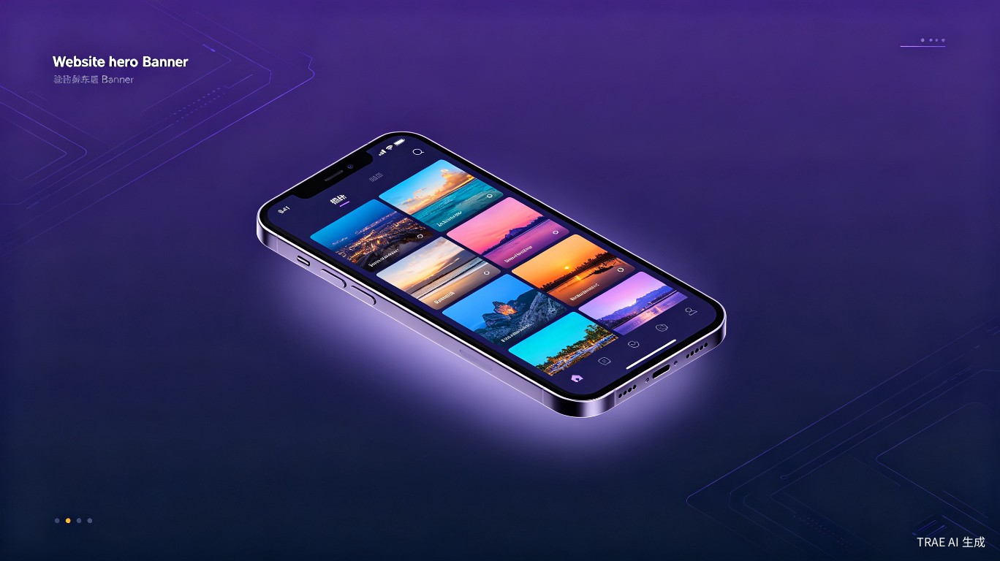

纯本地 · 零网络 · 只读扫描 — 一款 100% 由 AI 生成 的 Android 智能媒体库，让每张照片都被温柔对待

手机相册里的照片和视频越来越多，但系统自带的相册功能简陋且缺乏智能管理能力——照片散落在各个文件夹，无法按来源、作者、时间轴进行精细化分类。更令人不安的是，主流云相册需要上传所有私密照片到云端，隐私风险与日俱增，且存储空间一旦超出免费额度就需要持续付费。
作者本人没有任何编程基础，但在日常使用中深感现有相册工具的不足——要么功能单一，要么隐私堪忧。在与 AI 反复对话的过程中，一个想法逐渐清晰：能不能做一款完全本地运行、不联网、不修改原文件、同时又能智能管理媒体文件的工具？ 于是，绮梦影库诞生了。
一款纯本地 Android 应用（APK），无需联网，只读方式扫描设备上的图片与视频，提供智能分类、多维筛选、推荐算法、数据统计等专业级功能，所有数据存储在本地 Room 数据库中。
"零网络、零上传、只读扫描 — 不申请网络权限，所有数据仅存在设备上，不移动/修改/删除用户的任何原始媒体文件。"
手机里存有数千张照片和视频，需要高效浏览和管理的普通用户
不愿将私密照片上传到云端，对数据主权有强烈意识的用户
需要按来源、作者、标签整理大量素材的摄影师和视频创作者
只能按时间排序，无法按来源、作者、评分等维度筛选，面对海量照片束手无策
上传照片到云端意味着交出数据控制权，数据泄露事件频发，且需要持续付费
照片分散在 DCIM、Download、Pictures 等多个文件夹，没有统一的管理入口
不知道自己拍了多少照片、最喜欢什么类型、浏览习惯如何，缺少数据驱动的反馈
AndroidManifest 中显式移除 INTERNET 权限，从架构层面杜绝数据外泄可能。所有数据存储在本地加密数据库，用户完全掌控自己的数字资产。在数据隐私日益受到关注的今天，为大众提供了一款真正值得信赖的媒体管理工具。
10 维智能评分算法自动推荐精彩内容，多维度筛选面板让海量文件秒级定位。双引擎扫描（MediaStore + SAF）确保不遗漏任何文件，包括 .nomedia 隐藏目录。相比系统相册，浏览效率提升数倍。
项目100% 由 AI 生成，作者零编程基础，通过与 AI 反复对话完成整个开发。证明了 AI 辅助编程的无限可能 — 只要有好创意，任何人都能借助 AI 工具打造出专业级产品。
MIT 许可证开源，配备完整的 AI 协作文档体系（项目指南、开发计划、各模块指南、代码维护规范），任何开发者都可以参考学习 AI 协作开发的最佳实践。
10 维评分算法（分辨率、清晰度、色彩丰富度、人脸数量、浏览历史、收藏状态等）智能推荐，排行榜支持日/周/月/年维度切换
双指缩放切换 2-5 列网格布局，胶囊筛选器快速过滤，多维度排序面板，支持按类型、评分、时间等维度组合筛选
按来源文件夹自动生成虚拟相册，不移动原文件，支持作者管理、标签系统、收藏夹，打造个性化媒体库
专业报表页面，含折线图、环形图、柱状图、排行榜，可视化展示浏览习惯、收藏分布、文件类型占比
图片支持原图加载 + 双指缩放，视频支持 ExoPlayer 播放 + 手势控制（亮度/音量/进度），时间轴标签快速定位
11 类数据 JSON 备份导出，自动同步，导入恢复。所有数据完全离线，用户可随时备份和迁移
项目采用 单 Activity + 多 Fragment + MVVM 架构，100% Kotlin 编写，配备完整的 Room 数据库层、双引擎扫描系统和 NDK 原生加速。
| 技术栈 | 选型 | 说明 |
|---|---|---|
| 语言 | Kotlin 100% | 现代、简洁、空安全 |
| 架构 | MVVM + Repository | 分层清晰，易于维护 |
| 数据库 | Room 2.8.3 + KSP | 12 实体、10 DAO、版本 3 |
| 图片加载 | Coil 3.4.0 | 自定义 LargeImageDecoder + libspng 加速 |
| 视频播放 | Media3 ExoPlayer 1.4.1 | 自定义 BiliPlayerView 控制器 |
| 文件扫描 | SAF + MediaStore | 双引擎，兼容 .nomedia |
| 原生加速 | libspng v0.7.4 | ARM NEON 优化 PNG 解码 |
| 最低 SDK | Android 12 (API 31) | 充分利用现代 API |
| 构建系统 | Gradle Kotlin DSL | Version Catalog 统一依赖管理 |
核心推荐引擎基于 10 个维度 综合评分，为每张照片/视频计算推荐分数，首页展示最值得回顾的精彩内容。
标签相关性 (0.22)：统计标签在已浏览文件中的频次并归一化；标签合集 (0.15)：文件标签集与用户 Top-20 偏好标签的 Jaccard 相似度
互动热度 (0.10)：(viewCount+playCount) 归一化；点赞 (0.05)：likeCount 归一化；浏览深度 (0.03)：totalBrowseSeconds 归一化
时效 (0.15)：距上次浏览天数衰减，从未浏览=0.3；新鲜度 (0.05)：入库时间衰减，鼓励新文件曝光
发现 (0.20)：1 - min(viewCount/5, 1)，浏览越少分越高；随机扰动 (0~0.30)：基于 seed 确定性随机；每日惩罚：已展示文件 -0.8
本项目最特别之处在于：作者没有任何编程基础，整个项目通过与 AI 反复对话开发完成。从最初的想法到 v1.7 版本，经历了数百轮对话迭代，代码量超过数万行。
"把创意丢给 AI，数百轮对话迭代出一个完整的 Android 应用。这是 AI 时代创造力的最好证明 — 技术门槛不再是障碍，真正重要的是你的想法。"
项目配备了完整的 AI 协作文档体系，包括 项目指南、开发计划、各模块技术文档、代码维护规范、AI 触发词矩阵 等，确保任何 AI 工具都能快速接手继续开发。这本身就是一套 AI 协作开发的最佳实践参考。
生活娱乐 — 面向大众用户的日常媒体管理需求，让浏览照片成为享受
纯本地、零网络、只读扫描、双引擎、10 维算法、NDK 加速、MVVM 架构
100% AI 生成，证明零基础也能借助 AI 打造专业产品，具有行业示范意义
MIT 协议开源，完整文档体系，为 AI 协作开发提供最佳实践参考